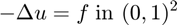
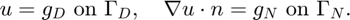
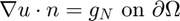
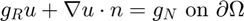
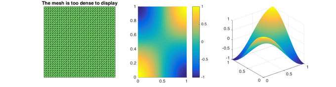
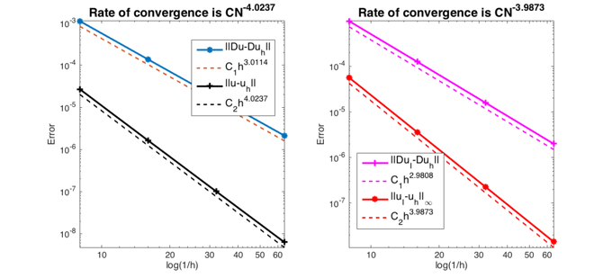
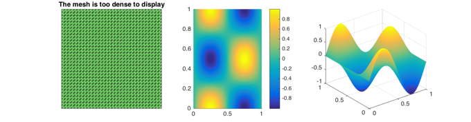
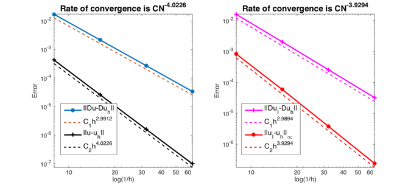

RATE OF CONVERGENCE OF CUBIC ELEMENT FOR POISSON EQUATION
This example is to show the rate of convergence of cubic finite element approximation of the Poisson equation on the unit square:

for the following boundary condition:
- Non-empty Dirichlet boundary condition. 
- Pure Neumann boundary condition. .
- Robin boundary condition. 
Contents
Setting
[node,elem] = squaremesh([0,1,0,1],0.25);
option.L0 = 1;
option.maxIt = 4;
option.maxN = 1e6;
option.printlevel = 1;
option.elemType = 'P3';
Non-empty Dirichlet boundary condition.
pde = sincosdata; bdFlag = setboundary(node,elem,'Dirichlet','~(x==0)','Neumann','x==0'); femPoisson(node,elem,pde,bdFlag,option);
Multigrid V-cycle Preconditioner with Conjugate Gradient Method
#dof: 2401, #nnz: 35034, smoothing: (1,1), iter: 14, err = 7.02e-08, time = 0.092 s
Multigrid V-cycle Preconditioner with Conjugate Gradient Method
#dof: 9409, #nnz: 145290, smoothing: (1,1), iter: 16, err = 5.63e-09, time = 0.055 s
Multigrid V-cycle Preconditioner with Conjugate Gradient Method
#dof: 37249, #nnz: 591594, smoothing: (1,1), iter: 18, err = 4.43e-10, time = 0.2 s
Table: Error
#Dof h ||u-u_h|| ||Du-Du_h|| ||DuI-Du_h|| ||uI-u_h||_{max}
625 1.25e-01 2.70637e-05 1.12141e-03 9.84838e-04 5.67685e-05
2401 6.25e-02 1.64362e-06 1.38348e-04 1.26270e-04 3.60856e-06
9409 3.12e-02 1.01250e-07 1.71700e-05 1.59509e-05 2.27905e-07
37249 1.56e-02 6.28490e-09 2.13842e-06 2.00358e-06 1.42241e-08
Table: CPU time
#Dof Assemble Solve Error Mesh
625 9.68e-02 1.65e-03 1.10e-01 1.00e-02
2401 2.01e-02 9.24e-02 2.00e-02 0.00e+00
9409 7.20e-02 5.51e-02 2.00e-02 1.00e-02
37249 2.45e-01 2.02e-01 8.00e-02 2.00e-02
  Pure Neumann boundary condition.
pde = sincosNeumanndata;
bdFlag = setboundary(node,elem,'Neumann');
femPoisson(node,elem,pde,bdFlag,option);
Multigrid V-cycle Preconditioner with Conjugate Gradient Method
#dof: 2401, #nnz: 38084, smoothing: (1,1), iter: 16, err = 5.51e-08, time = 0.039 s
Multigrid V-cycle Preconditioner with Conjugate Gradient Method
#dof: 9409, #nnz: 151460, smoothing: (1,1), iter: 18, err = 8.81e-09, time = 0.064 s
Multigrid V-cycle Preconditioner with Conjugate Gradient Method
#dof: 37249, #nnz: 604004, smoothing: (1,1), iter: 21, err = 3.97e-10, time = 0.23 s
Table: Error
#Dof h ||u-u_h|| ||Du-Du_h|| ||DuI-Du_h|| ||uI-u_h||_{max}
625 1.25e-01 4.29608e-04 1.70743e-02 1.61466e-02 8.39893e-04
2401 6.25e-02 2.60670e-05 2.15721e-03 2.06194e-03 5.90085e-05
9409 3.12e-02 1.60744e-06 2.71037e-04 2.58554e-04 3.79712e-06
37249 1.56e-02 9.99996e-08 3.39784e-05 3.22882e-05 2.39045e-07
Table: CPU time
#Dof Assemble Solve Error Mesh
625 4.41e-02 1.53e-03 1.00e-02 0.00e+00
2401 2.15e-02 3.87e-02 1.00e-02 1.00e-02
9409 6.85e-02 6.42e-02 2.00e-02 0.00e+00
37249 2.48e-01 2.31e-01 1.00e-01 3.00e-02
  Pure Robin boundary condition.
option.plotflag = 0;
pdeRobin = sincosRobindata;
bdFlag = setboundary(node,elem,'Robin');
femPoisson(node,elem,pdeRobin,bdFlag,option);
Multigrid V-cycle Preconditioner with Conjugate Gradient Method
#dof: 2401, #nnz: 38113, smoothing: (1,1), iter: 13, err = 1.27e-07, time = 0.039 s
Multigrid V-cycle Preconditioner with Conjugate Gradient Method
#dof: 9409, #nnz: 151489, smoothing: (1,1), iter: 15, err = 1.05e-08, time = 0.058 s
Multigrid V-cycle Preconditioner with Conjugate Gradient Method
#dof: 37249, #nnz: 604033, smoothing: (1,1), iter: 18, err = 2.71e-10, time = 0.22 s
Table: Error
#Dof h ||u-u_h|| ||Du-Du_h|| ||DuI-Du_h|| ||uI-u_h||_{max}
625 1.25e-01 4.29700e-04 1.70747e-02 1.61526e-02 8.33177e-04
2401 6.25e-02 2.60683e-05 2.15722e-03 2.06171e-03 5.87472e-05
9409 3.12e-02 1.60746e-06 2.71037e-04 2.58543e-04 3.79064e-06
37249 1.56e-02 9.99999e-08 3.39784e-05 3.22878e-05 2.38940e-07
Table: CPU time
#Dof Assemble Solve Error Mesh
625 4.69e-02 1.29e-03 0.00e+00 0.00e+00
2401 1.87e-02 3.87e-02 1.00e-02 0.00e+00
9409 5.13e-02 5.81e-02 2.00e-02 1.00e-02
37249 2.05e-01 2.24e-01 1.00e-01 1.00e-02

Conclusion
The optimal rate of convergence of the H1-norm (3rd order) and L2-norm (4th order) is observed. The order of |DuI-Duh| is 3rd order and thus no superconvergence exists between nodal interpolate and uh.
MGCG converges uniformly in all cases.